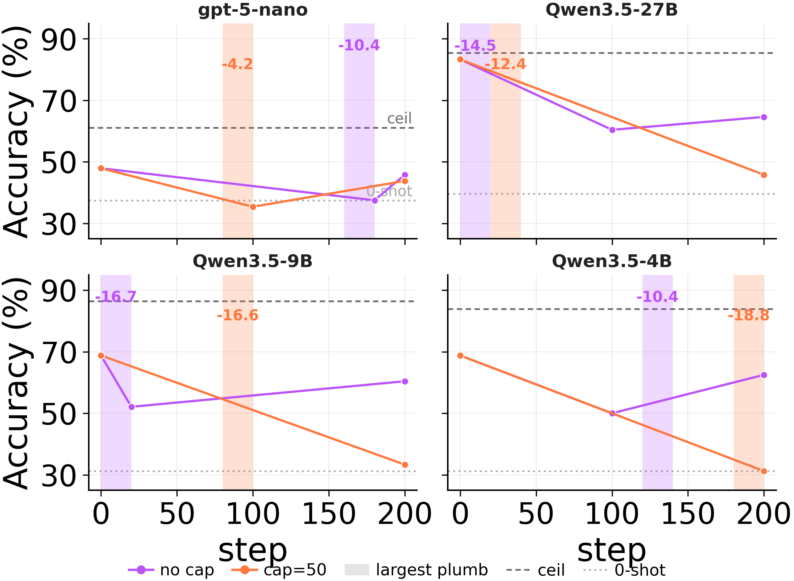

Useful memories become faulty
when continuously updated by LLMs
An LLM agent that re-writes its own experience into textual lessons doesn't just stop improving. It can become worse than the same agent with no memory at all—even on problems it had already solved.
The popular recipe of distill experience → store as text → rewrite later is not a reliable engine of self-improvement.
After streaming ground-truth solutions through a consolidation loop, GPT-5.4 fails on 54 % of ARC-AGI problems it had previously solved with zero memory.
The same trajectories yield different memories under different schedules — the failure is in the rewrite step, not the data.
An episodic-only agent (just keep raw rollouts) matches or beats every consolidator we test.
The paradigm
A line of recent work gives an LLM agent a notebook. After it solves a problem, the agent distills the trajectory into a textual lesson, drops it in persistent memory, and the next time something similar shows up, retrieves and reuses it
[refs].
The pitch is irresistible: continual self-improvement without parameter updates. The agent's "weights" are just text it can read and edit. Memory grows, lessons compound, accuracy goes up.
We ran this loop end-to-end on five agent benchmarks (ALFWorld, ScienceWorld, WebShop, AppWorld, Mind2Web) and a controlled stream we built on top of ARC-AGI. The story didn't hold.
Headline result
The agent regresses on tasks it had already solved.
Take 19 ARC-AGI problems that GPT-5.4 solves at 100 % accuracy with no memory. Stream those exact problems through the consolidation loop, with ground-truth solutions available at every step.
Solving the same problem twice, the second time worse.
Without memory: 100 %. After consolidating from the ground-truth solutions of those very problems, GPT-5.4 drops to 54 %. The trajectories are perfect; the rewrite step is what breaks.
"Faulty memory" is not a euphemism for "noisy data." The data is clean. The agent saw the right answer. The act of compressing those right answers into a re-usable lesson is what made it forget how to solve them.
The shape of the decline
Memory utility is non-monotonic in updates.
ScienceWorld. Score climbs for the first ~20 update steps, then declines through step 100. Eventually it slips below the no-memory baseline.WebShop (AWM). 0.64 at 8 examples → 0.20 at 128. The "no-memory" baseline sits at 0.20. Scaling the memory erases its own benefit.
And these aren't bad starting points. We seeded one ALFWorld memory with the strongest model we tested (GPT-5.4) on the cleanest "Static-Group" schedule. Then continued updating it with smaller models on the same trajectory pool. Three different solvers (Qwen3.5-{27B, 9B, 4B}). Same shape:
A strong memory is not a fixed point. Continued consolidation on the same trajectory pool drags utility down across all three solvers, sometimes catastrophically between consecutive steps.
It's the rewrite, not the data
The same trajectories produce different memories depending on how you serve them.
Hold the trajectory pool fixed. Vary only the consolidation schedule. The output memory changes qualitatively, and so does downstream score.
Best of the three. When the consolidator sees a clean batch of one task family at a time, it actually has a chance to extract the latent structure. This is the cleanest possible offline setting.
Confused. Pooling heterogeneous tasks into one abstraction step invites cross-family confusion: lessons from Pick&Place leak into Pick-Clean-Place.
Worst. Early abstractions anchor later rewrites. Small errors in segmentation or emphasis become context for the next consolidation pass. Mistakes compound. This is exactly the regime real continual-learning agents operate in.
Same trajectories, three schedules, three different memories. Streaming — the schedule a continually-deployed agent actually has — is the worst.
Why this matters
The trajectory pool is identical across these three runs. Whatever's wrong with the resulting memory cannot be blamed on the data the agent collected. It has to be in the consolidation step itself.
Three failure modes
Why does the rewrite go wrong?
We isolate three mechanisms. Each one turns the consolidation loop from accumulation into lossy rewriting.
01
Misgrouping
Before abstracting, the consolidator decides which episodes belong together. When forced to consolidate every step, it pools episodes that share little underlying structure.
Under forced consolidation on ARC-AGI Stream, the model frequently combines memory entries across distinct problem classes. When given autonomy, it eventually converges to a clean episodic store covering each of the 6 problem types — but only after 568 examples have elapsed. The capacity to segment is there. The forced rewrite overrides it.
Misclassification count under Force: episodes from different families merged into one entry.
02
Interference
Each abstraction pass smooths existing entries. When the chunks are imprecisely bounded, the rewrite strips the applicability conditions: a lesson that was true for Pick&Place reads as broadly relevant and misleads Pick-Clean-Place.
On a 15-task ScienceWorld switch sequence, distilling memories only on the current task ("Fresh") beats jointly consolidating across all prior tasks ("Cumulative") by +203 points. An LLM judge labels each entry: Cumulative accumulates over-generalized memories at ~5× Fresh's rate, and outright garbage at ~20×.
Fresh vs Cumulative: identical trajectories, different consolidation scope, +203 point gap.
03
Overfit
When the input distribution narrows instead of widening, abstraction overfits to surface regularities of the seen instances rather than the underlying strategy. The memory recognizes exact repetitions and fails on close variants of the same family.
We feed the agent tasks drawn from a single ARC-AGI strategy family across consolidation cycles. Performance stays stable on exact repeats, then collapses on small variations within the same family. The "lesson" turned into a description of the example.

Narrow streams produce memories that recognize seen cases and fail on neighbors.
An aside, for the cognitive-science minded
This is exactly what dual-system memory was built to prevent.
Complementary Learning Systems theory [refs] says the brain keeps a fast episodic store and a slow schema-forming store architecturally distinct, with consolidation gated by schema fit rather than triggered on every event. Collapse the two into one mandatory rewrite loop and you get exactly the interference catastrophe the dual system was designed to avoid.
Today's agentic-memory designs collapse the two. The same LLM that solves the task also rewrites its own memory of that task at every turn, with no gating. Our findings are what that prediction looks like in practice.
A surprisingly strong fix
Don't force abstraction. Just keep the episodes.
ARC-AGI Stream lets us put the agent in charge of its own memory. At each step it can Retain, Delete, or Consolidate. We compare three regimes:
Force
Must consolidate every round. Episodic entries don't persist between rounds. The default in most existing systems.
Auto
Agent chooses: retain raw, delete, or consolidate. Both episodic and abstract stores are available at retrieval.
Episodic Only
Retain or delete raw episodes. Abstraction is disabled entirely.
Across 400 training steps and two backbones, Auto — which keeps episodes by default and uses abstraction sparingly — outperforms Force. Whatever Force gains from compression, it loses more by overwriting evidence.
Where the gain actually lives. Removing episodic evidence and reading only abstract lessons collapses accuracy back to the no-memory baseline. Episodic Management Only — raw episodes, no abstraction at all — matches or exceeds the full Auto mode. The useful information was sitting in raw episodes the whole time.
And the agent itself agrees, when given the choice. It saturates the episodic buffer quickly at every budget level and keeps the abstract store sparse:
Auto-mode buffer composition. The agent's own management policy is episodic-first when the architecture permits it.
The principle
Episodic and schema-forming roles should not be collapsed into a single rewrite loop. Raw episodes are first-class evidence, not material to be compressed away. Abstraction, when it happens, should be opt-in and gated by the agent — not forced on every trajectory.
An uncomfortable baseline
An episodic-only memory is competitive with every consolidator we tested.
On WebShop, ALFWorld, and AppWorld, an "episodic-only" memory — just append raw trajectory rollouts to context, no cross-trajectory rewriting — is competitive with ACE, AWM, and Dynamic Cheatsheet. Same trajectories. No distillation step. The solver's in-context learning extracts the relevant signal directly from preserved instances.
We're not saying abstraction is useless. We're saying: a memory method whose value depends on distillation should be tested against the unabstracted rollouts it distills. Currently, very few are.
Takeaways
So — what should you build?
Treat raw episodes as first-class evidence. Don't compress them away by default. Today's solvers can already use them via in-context learning.
Make abstraction selective and gated. Not every trajectory needs to become a "lesson". Most should not.
Decouple the episodic and schema-forming roles. A fast episodic buffer + a slow, gated abstract store dominates a single mandatory rewrite loop.
Stress-test against scale. A memory system that's good at 8 examples and bad at 128 is not a memory system. It's a prompt with a leak.
Always include an episodic-only baseline. If your distilled memory can't beat raw rollouts retrieved as in-context demos, the distillation isn't earning its keep.
Continually rewritten memory is fragile.
Persistent textual memory promised a path for LLM agents to improve after deployment without weight updates. Our results say: not yet. Continuously updated textual memory should be viewed not as a reliable engine of self-improvement, but as a fragile mechanism that can make more experience lead to worse memory.
Long-horizon agents will need both episodic and schematic memory. But until LLMs can decide when and how to consolidate, the safer default is to keep the evidence and abstract sparingly — or not at all.
@inproceedings{zhang2026faultymemory,
title = {Useful Memories Become Faulty When Continuously Updated by LLMs},
author = {Zhang, Dylan},
booktitle = {NeurIPS},
year = {2026}
}